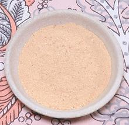

 |
Toasted Chickpea Flour (Besan)Burma | ||||
| Makes: Effort: Sched: DoAhead: |
1/2 cup * 15 min Yes |
This is an important ingredient in Burma, used as a thickener and sprinkled on salads. It's quick to make, but takes constant attention because you're dry frying powder. | |||
|
1/2 |
c |
Besan (1) |
Make: - (15 min)
|